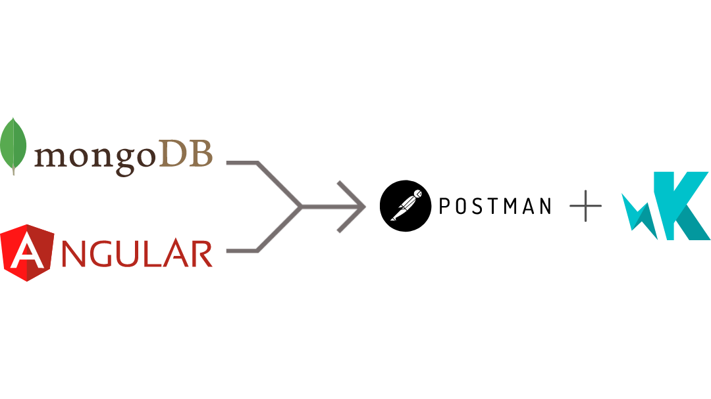

MyFlix is a web app built using the popular framework Angular. The application allows users to create accounts, update personal information, and create a list of their favorite movies.
MyFlix served as practice in building applications with Angular and deepened my understanding of JavaScript and TypeScript.
My goal for this project was to create a single-page movie application using Angular that I can showcase in my professional portfolio.
My approach for this project consisted of two stages: use the application's existing server-side code (REST API and MongoDB) to create the client side of the application, and test the application with Postman and Karma.
Before this project, I created a REST API that stores information on a specific set of movies. This information was stored in a database program called MongoDB.
The movie info can be accessed through HTTP endpoints. CRUD operations that affect user information can be accessed through endpoints as well.
I used Postman to test the endpoints before designing the client-side programming.
After ensuring that the server-side code was working correctly, I moved on to building the application with Angular. The application follows a single-page model that uses different components and forms for the user to access information.
Login and Registration forms allow users to log in or register, respectively. A movie-view component allows users to see info on different movies. A user can also add these movies to their favorites list. The profile-view component allows users to edit their profile information.
The biggest challenge that I had with this project was getting the "add to favorites" feature to work. The idea is very simple: click the heart and it will turn red. The movie will then be added to a user's list of favorites, and the heart will remain red until it is clicked again. Unfortunately, favoriting a movie would cause the app to crash.
I was able to fix this by making sure the syntax for favoriting movies in the code for the application matched with the movie API's code. I then used Karma to make sure it worked as intended.